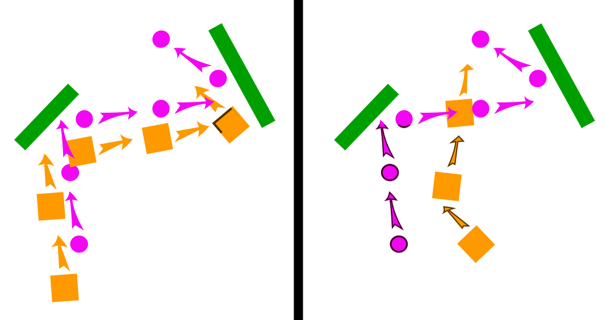
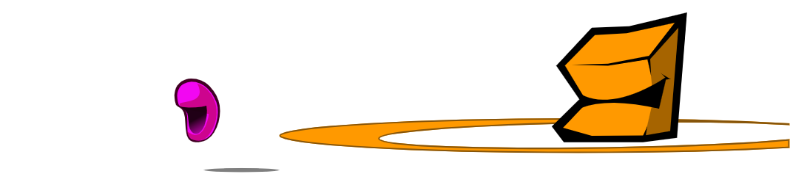
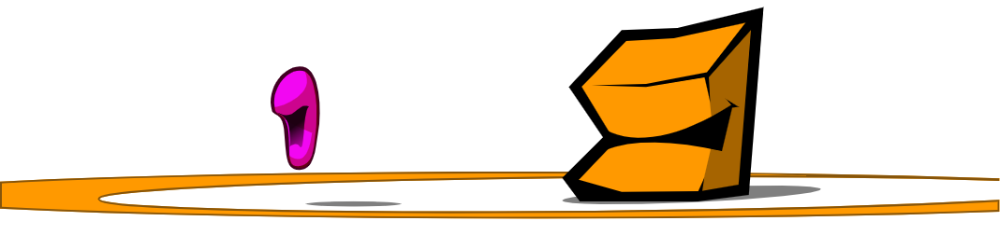
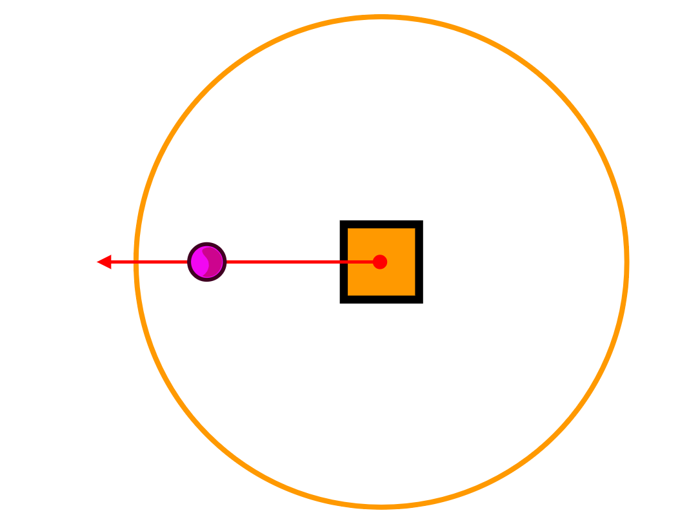
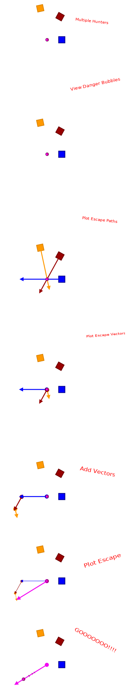
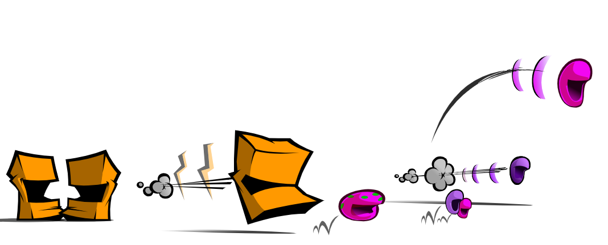

Hi! I'm a Square
And I'm a Circle
We were asked to participate in a study about Pack Hunting
We were asked to participate in a study about Pack Hunting
I played the hunter... a deadly,
deadly killer.
And I was the innocent prey,
just running for my life!
We were placed in a number of experimental
hunts, each with different characteristics.
Afterwards, we were asked to report back about our experiences in each situation.
So, here we go!
Afterwards, we were asked to report back about our experiences in each situation.
So, here we go!
In the first hunt, we were dropped in an open
field.
As the prey, I was given a much higher top speed than the hunter.
As the prey, I was given a much higher top speed than the hunter.

As you can see, there was simply NO WAY for me
to catch up. No matter what, Circle could
ALWAYS outrun me.
In fact, it didn't matter how many prey circles were in the scene, I could NEVER catch anyone.
In fact, it didn't matter how many prey circles were in the scene, I could NEVER catch anyone.

That seems kind of obvious: in an open field,
if the prey's top speed is faster than the
hunter, no kills will ever be made.
Things were reversed for the next hunt. This
time eYe
had a much higher top speed than the prey.
I simply couldn't escape!
No matter how many circles were placed in the scene, whichever circle was closest to the hunter got caught immediately.
Again, this ought to make perfect sense.
No matter how many circles were placed in the scene, whichever circle was closest to the hunter got caught immediately.
Again, this ought to make perfect sense.
It might seem like there could NEVER be any
way to create a fair hunt.
But wait...
But wait...
For the third hunt, I was again given a higher
top speed than the hunting square, but now,
obstacles
were randomly placed throughout the scene.
Just like before, I started off unable to catch
up to any of the prey circles.
But then something happened...
But then something happened...
I ran into a wall! I had to stop, and
turn around to get away from the wall.
I had no choice but to briefly run TOWARDS the hunter!
I had no choice but to briefly run TOWARDS the hunter!
That was all I needed.
When the obstacles forced Circle to zig-zag around, it was kind of like reducing the prey's top speed.
When the obstacles forced Circle to zig-zag around, it was kind of like reducing the prey's top speed.
When I ran into the wall, I had to stop,
and turn around.
Sure, technically I was still faster, but I had to use some of my speed to run around the walls, instead of using all of it to increase my distance away from the hunter.
Sure, technically I was still faster, but I had to use some of my speed to run around the walls, instead of using all of it to increase my distance away from the hunter.
And, because I was slower, I trailed behind my
prey - I didn't even encounter the obstacles
until AFTER the prey had already run into them.
A lot of times, I turned around from
a wall and RIGHT INTO the waiting jaws
of the hunting Square.
I wasn't WAITING ofcourse - it just
appeared that way because I was lagging
behind due to my slower speed.
To a lot of people, it appeared as though I was intentionally running my prey towards an obstacle, and then waiting for the catch, on purpose.
That's what they call an
To a lot of people, it appeared as though I was intentionally running my prey towards an obstacle, and then waiting for the catch, on purpose.
That's what they call an
EMERGENT property!
Of COURSE it's going to look like that ...
... and let me tell you why.
Hi, I'm a Lab Coat
You can tell from my clipboard that I must know what I'm talking about.
But what am I talking about?
You can tell from my clipboard that I must know what I'm talking about.
But what am I talking about?
It was being slower that allowed
the hunter to catch the prey.

By making fewer updates to his direction,
the hunter appears to be more focused on
pursuing the prey. A prey circle
has the time and speed and quickness of
opportunity to make many changes to
its position while the relative lethargy
of the square only permits the hunter
to update its postion after the
fleeing prey has made many twists and turns.
If the hunter had the same top speed as the prey, he would always be right on the heels of the prey, making the same number of twists and turns, following in the exact footsteps of the prey, and never catching up.
If the hunter had the same top speed as the prey, he would always be right on the heels of the prey, making the same number of twists and turns, following in the exact footsteps of the prey, and never catching up.
Being faster is a disadvantage to the hunter.
It's as though the prey's flight path is
giving the hunter instructions on how to
smooth-out a more efficient navigation
around the obstacles.
When the hunter's top speed is too similar to the prey's top speed, there will never be a kill.
As we've seen, in open terrain, a faster hunter will kill every time, a slower hunter will never make a kill - but in the presence of obstacles, there's a range of speed below which the hunter is, obviously, too slow to ever make a kill, but also over which the hunter is too fast to take advantage of the obstacles.
Eventually, ofcourse, there's another range of higher speeds where the hunter is fast enough to outrun the prey; but what's fascinating is that there happens to be a range of lower speeds at which hunting is much more efficient.
When the hunter's top speed is too similar to the prey's top speed, there will never be a kill.
As we've seen, in open terrain, a faster hunter will kill every time, a slower hunter will never make a kill - but in the presence of obstacles, there's a range of speed below which the hunter is, obviously, too slow to ever make a kill, but also over which the hunter is too fast to take advantage of the obstacles.
Eventually, ofcourse, there's another range of higher speeds where the hunter is fast enough to outrun the prey; but what's fascinating is that there happens to be a range of lower speeds at which hunting is much more efficient.
That sounds like good news!
Maybe ta you. I'm not that
excited by it.
Guys, listen - what's interesting is
that we've found a possible way to
achieve what we initially showed
could never happen.
Which is what, again?
That a slower hunter could
catch faster prey.
Let's see what other possible ways could allow a slower hunter to catch a faster prey.
Let's see what other possible ways could allow a slower hunter to catch a faster prey.
Wait, what? I'm not sure I ...
Be quiet.
Again, we were placed in an open
terrain, but this time there were
several squares - a small pack of
us, if you will.
I was given a higher top speed, and
things were looking good at first.
As members of a pack, we ofcourse
stayed a certain distance away from
eachother as we chased down Circle.
Initially, we all had identical top
speeds as the prey, and were never
able to catch up in the open terrain.
We formed a small triangle.
Since the pack members pursued me at the same rate that I fled, our little triangle remained the same at each step of the way.
You can see in this pursuit diagram that nothing changed between steps, and a kill was never made.
Since the pack members pursued me at the same rate that I fled, our little triangle remained the same at each step of the way.
You can see in this pursuit diagram that nothing changed between steps, and a kill was never made.
Looking good for me so far.
Next, in the same open terrain, one of
the square hunters was given a
LOWER top speed.
That sounds good too!
Or is it - slower hunters didn't always help me out before, did they?
Or is it - slower hunters didn't always help me out before, did they?
In this updated pursuit diagram you can
see that we initially formed an
equilateral triangle, but as the slower
hunting square lagged behind, our
arrangement became more scalene, forcing
us into a curved path.
You see, as a fleeing prey, my goal is
to get as far as I can from ALL pursuing
hunters. When the squares are equally
far away, my safest flight path is,
ofcourse, straight ahead.
Can you explain that a little bit more?
Sure. Look: the way I view the universe
is, that every single object in the galaxy
has a DANGER BUBBLE surrounding it.
As long as I'm outside that bubble, I'm perfectly fine.

As long as I'm outside that bubble, I'm perfectly fine.
Wow, that sounds really paranoid!
Well, I am a Circle of prey, driven only
by my fear.
Hmm.
What happens if I get closer?
What happens if I get closer?
That's when I start to get scared!

So, you can tell when you're inside a
fear bubble - what do you do then?
I figure the fastest way out of
that Danger Bubble, and RUN!
How do you know the fastest way out?
I compute a vector from the center
of the bubble - where you're standing -
through myself, and out of the bubble.
Then I head along that vector at my top speed.

Then I head along that vector at my top speed.
What if you're in more than one bubble?
Oy! I add up the total
escape-vectors, and run along
the resultant vector.

Oh, I understand now.
[scroll down]

So, like I was saying, when the hunting
squares are equally far away, my safest
path is straight ahead.
But as one of the pursuing squares lags behind, it's safer for me to turn slightly towards the side of the slower hunter.
Gradually, this causes us to move in a large loop.
But as one of the pursuing squares lags behind, it's safer for me to turn slightly towards the side of the slower hunter.
Gradually, this causes us to move in a large loop.
That's true!
But what Circle didn't know...
But what Circle didn't know...
Didn't know?!
Wait a second, what's going on here?!
What Circle didn't know was that there
was a third hunting square in
the pack - one that was much MUCH slower
than the rest of us.
Oh, alright; that doesn't sound too bad.
How much slower?
Incredibly slow - so much slower
that you might not even have noticed he
was there.
In this pursuit diagram, the cripplingly slow hunter is shown in red; each of his steps is much smaller than our own.
In this pursuit diagram, the cripplingly slow hunter is shown in red; each of his steps is much smaller than our own.
Oh no.
You can see what happened: as we looped
around, we drove the prey circle straight
towards the waiting jaws of the slowest
square.
That's ridiculous!
No, that's math-liculous.
Let me explain.
Let me explain.
There is no ambush, there is no planning,
there is no communication between members
of the pack.
~ there are no alpha dogs ~
All they do is, individually, try to get
as close to the prey as they can while
the prey tries to get safely away from
them.
As a result, this appears as though some members of the pack are intentionally driving the prey toward other members who are lying in wait.
Running this same scenario in a scene with obstacles produces even more striking behaviors. The slower hunters appear to be hiding out in the obstacles waiting to ambush the prey; which, again, is not happening; their slower rate of updating their position causes them to take longer to negotiate their way around obstacles, during which time the prey is being driven towards them.
Once more, the most interesting thing we've noticed is that it's not just possible for slower hunters to catch faster prey, but it's often advantageous to be considerably slower than the prey.
Infact, in the previous scenario, it's often the slowest member of the pack who makes the kill.
Other people disagree, saying that the most interesting thing we've noticed so far is that pack hunting emerges on its own; it doesn't even require communication between pack members!
As a result, this appears as though some members of the pack are intentionally driving the prey toward other members who are lying in wait.
Running this same scenario in a scene with obstacles produces even more striking behaviors. The slower hunters appear to be hiding out in the obstacles waiting to ambush the prey; which, again, is not happening; their slower rate of updating their position causes them to take longer to negotiate their way around obstacles, during which time the prey is being driven towards them.
Once more, the most interesting thing we've noticed is that it's not just possible for slower hunters to catch faster prey, but it's often advantageous to be considerably slower than the prey.
Infact, in the previous scenario, it's often the slowest member of the pack who makes the kill.
Other people disagree, saying that the most interesting thing we've noticed so far is that pack hunting emerges on its own; it doesn't even require communication between pack members!
Well, this isn't really encouraging.
Are you up for some more testing?
Maybe?
In the next hunt, you get to be
POISONOUS.
What the fu...
OH, that sounds good! Let's try that one.
I'm not sure I like where this is going.
In the next series of hunts, I was
turned into a deadly, deadly, poison.
What he means is that there were several
prey members in a herd and one of them
was marked with an INFECTION.
For the first few hunts, the infection
had NO AFFECT on the prey.
That is to say, everyone's top speeds remained the same.
That is to say, everyone's top speeds remained the same.
As before, in an open field, when the
prey has a higher top speed than the
hunter, there is never a kill.
And when the hunter has a higher top speed, he gets a kill every time. During infected hunts where the infection has NO INFLUENCE over the prey, the hunter simply catches the closest prey first, and therefore makes exactly the same percent of infected kills as there are infected prey.
And when the hunter has a higher top speed, he gets a kill every time. During infected hunts where the infection has NO INFLUENCE over the prey, the hunter simply catches the closest prey first, and therefore makes exactly the same percent of infected kills as there are infected prey.
That ought to make a lot of sense,
it's identical to the first series of
hunts.
Next, the hunter was given a slower top speed than the prey, BUT now the infection gradually caused the afflicted member of the herd to have a lower and lower top speed.
Next, the hunter was given a slower top speed than the prey, BUT now the infection gradually caused the afflicted member of the herd to have a lower and lower top speed.
The obvious thing happened: during the
time that all the herd members had higher
top speeds than the hunter, there were
no kills, but the instant the infected
prey slowed enough to be caught, he was.
The hunter made a kill 100% of the time, and 100% of the kills were infected; the infection got transmitted EVERY time.
The hunter made a kill 100% of the time, and 100% of the kills were infected; the infection got transmitted EVERY time.
A lot of this is tautological,
if you know what I mean.
Slower hunters CAN'T catch faster prey in an open run - that's what "faster" means in this context.
Faster hunters ALWAYS catch their prey. In the construct of this environment, that's basically what these terms just mean.
So, it ought to be self-edivent that when infections cause faster prey to slow down, EVERY kill will be of an infected herd member.
Slower hunters CAN'T catch faster prey in an open run - that's what "faster" means in this context.
Faster hunters ALWAYS catch their prey. In the construct of this environment, that's basically what these terms just mean.
So, it ought to be self-edivent that when infections cause faster prey to slow down, EVERY kill will be of an infected herd member.
What happened when we sent an entire pack
after an entire herd when there were
infected prey?
Hunters had lower top speeds than the prey - but does that mean the pack will only kill the slowest, weakest, sickest member of the herd?
Hunters had lower top speeds than the prey - but does that mean the pack will only kill the slowest, weakest, sickest member of the herd?
That's not what happened last time!
If you remember, my having a higher top speed did NOT MATTER against a pack.
I was chased, and routed, and ambushed, and run into a trap, regardless of my speed.
If you remember, my having a higher top speed did NOT MATTER against a pack.
I was chased, and routed, and ambushed, and run into a trap, regardless of my speed.
And that's what happened again.
The top speed of the prey member had NO BEARING on which one of them we caught.
The top speed of the prey member had NO BEARING on which one of them we caught.
Do you see what happened there?
The pack did NOT isolate and kill off the weak; the pack ate whatever member of my herd they happened to be able to ambush.
The fact that I was POISONOUS still didn't help me defeat a pack of hunters!
The pack did NOT isolate and kill off the weak; the pack ate whatever member of my herd they happened to be able to ambush.
The fact that I was POISONOUS still didn't help me defeat a pack of hunters!
And it never will, let me babble on
for a while longer ...
Against a herd, a lone-predator will
always kill the slower, weaker members.
In the case that this slowness or
weakness is caused by a transmissable
infection, the lone-predator will
be exposed to that disease at a much
much higher rate than a pack.
A slower pack - which as was demonstrated here, has no coordinated hunting tactics, no communication, and no leadership - catches prey entirely INDEPENDENT from the prey's health.
A pack is capable of catching prey that is FASTER than itself. A pack's slowest members are often at an ADVANTAGE during a kill. The slower members of the pack are integral to the apparent "techniques" of pack hunting.
But what other apparent behaviors do people notice from these pack hunts?
If, besides assigning infection to weaken herd members, we assign "age" to cause weakness among pack members, immediately we notice that the younger members of the pack give priority to the elder members. The younger faster members of the pack drive the delicious prey TO the elderly ones. The elderly members eat first, and have the least physically demanding role in a hunt.
What other "altriustic" delusions might people notice?
Remember that as an infected herd member slows down, it can be caught by a, now, faster hunter - and that it was from being slower that the pack was able to ambush its prey.
That is to say, the younger, faster, healthier members of the pack end up catching infected herd members themselves, but driving healthy prey towards the waiting elderly pack hunters; it appears as though the young are offering the better food to the elderly.
A slower pack - which as was demonstrated here, has no coordinated hunting tactics, no communication, and no leadership - catches prey entirely INDEPENDENT from the prey's health.
A pack is capable of catching prey that is FASTER than itself. A pack's slowest members are often at an ADVANTAGE during a kill. The slower members of the pack are integral to the apparent "techniques" of pack hunting.
But what other apparent behaviors do people notice from these pack hunts?
If, besides assigning infection to weaken herd members, we assign "age" to cause weakness among pack members, immediately we notice that the younger members of the pack give priority to the elder members. The younger faster members of the pack drive the delicious prey TO the elderly ones. The elderly members eat first, and have the least physically demanding role in a hunt.
What other "altriustic" delusions might people notice?
Remember that as an infected herd member slows down, it can be caught by a, now, faster hunter - and that it was from being slower that the pack was able to ambush its prey.
That is to say, the younger, faster, healthier members of the pack end up catching infected herd members themselves, but driving healthy prey towards the waiting elderly pack hunters; it appears as though the young are offering the better food to the elderly.
Enough of that. Let's look at some
pack formation hunts.
In the next hunt, a large number of
hunting squares were placed in the
scene, each with VARIOUS top speeds.
Some had higher top speeds than the prey, some lower.
Some had higher top speeds than the prey, some lower.
A large number of my fellow circles
were placed in the scene, each with
the same top speed, but a transmissible
INFECTION afflicted some of us.
The only symptom of this infection is that is SLOWS your top speed.
The only symptom of this infection is that is SLOWS your top speed.
And this time, squares that caught the
infection also started gradually
slowing down.
Who wants to guess what happened? Just
from thinking through the results of
the earlier experiments - you wanna guess?

There were, relative to the top speed of
the prey, basically three kinds of
hunters: FAST, MEDIUM, and SLOW.
Fast hunters have top speeds higher than the top speed of the prey.
Slow hunters have top speeds slower even than the infected prey.
And, Medium-speed hunters are slower than the prey's top speed, but faster than the infected prey.
Fast hunters have top speeds higher than the top speed of the prey.
Slow hunters have top speeds slower even than the infected prey.
And, Medium-speed hunters are slower than the prey's top speed, but faster than the infected prey.
What happened was ...
- Fast hunters immediately made a kill, but acquired infections at the same percentage as the herd's infection-rate.
- Slow hunters did not catch or kill anything, but also completely avoided infection.
- Medium hunters initially did not catch anything, but when the infected prey slowed down enough, every one of the medium speed hunters became infected.
The result was that we BECAME A PACK.
The hunters who were so fast that they acted like lone-predators, got infected, and slowed down.
Once again, it's the slowing down that allows the pack hunting effects to emerge.
As the fastest hunters gradually lost top speed - due to infection - they started participating in pack hunts.
The hunters who were so fast that they acted like lone-predators, got infected, and slowed down.
Once again, it's the slowing down that allows the pack hunting effects to emerge.
As the fastest hunters gradually lost top speed - due to infection - they started participating in pack hunts.
They weren't "participating" in the
usual sense - there was no
choice on their part...
WHY?! Why do you get to explain every time?
eye understand this
too! I could explain it just as
well as ...
Everything about the pack, itself, emerges.
No matter what the initial composition
of the hunters might be, the transmission
of infection guarantees that the distribution
of speed among the random hunters will
eventually settle into those speeds
most conducive to pack hunting.
It's not just all of the perceived techniques of pack hunting that arise from independent actors - without communication, without leadership, without organization - the composition of characters needed for the packish-behavoirs we've noted will be created, without a casting director, but by the transmission of infection.
It's not just all of the perceived techniques of pack hunting that arise from independent actors - without communication, without leadership, without organization - the composition of characters needed for the packish-behavoirs we've noted will be created, without a casting director, but by the transmission of infection.
Hi! I'm a Laptop
Don't you just love how much computing power has been put into the hands of the common man? Ha ha ha ...
NEITHER do I.
That's why I've done everything I can to prevent labcoat over there from having access to the kinds of computing power necessary to run his simulations.
Don't you just love how much computing power has been put into the hands of the common man? Ha ha ha ...
NEITHER do I.
That's why I've done everything I can to prevent labcoat over there from having access to the kinds of computing power necessary to run his simulations.
Thanks, man.
Anytime.
Hey, I'm gonna be in town next week; can I crash at your place?
Hey, I'm gonna be in town next week; can I crash at your place?
Hilarious.
Get it? "Crash" at your place?
Like a computer...
Like a computer...
Yeah, I got it the first time - remember:
YOU'RE the one who's slow, not me.
Anyway, point of the story is ...
Aaah, I forgot what I was talking about.
Aaah, I forgot what I was talking about.
Yeah, you have NO MEMORY.
You were explaining about how you're terrible at everything you do.
You were explaining about how you're terrible at everything you do.
Oh, yeah.
I was saying is, my job is to prevent Lap-dog over there...
I was saying is, my job is to prevent Lap-dog over there...
LAB! COAT!
What I said.
My purpose in life is to provide BARELY ANY computing power to this project.
My purpose in life is to provide BARELY ANY computing power to this project.
As a result, the next few claims
need to be understood as still requiring
more high-level computational verification.
They can only be shown to be valid on a SMALL SCALE - with numbers of hunters and prey objects that I can handle the computation for.
And while it's not invalid to project these ideas into larger scenes, they could really use some verification on a LARGER SCALE.
They can only be shown to be valid on a SMALL SCALE - with numbers of hunters and prey objects that I can handle the computation for.
And while it's not invalid to project these ideas into larger scenes, they could really use some verification on a LARGER SCALE.
Great - thanks for that disclaimer.
What Laptop has been trying to
avoid is that the PREY emerges too.
In a scene with a large number of
hunters that have varying top speeds,
a large number of prey that ALSO
have varying top speeds, and a
lethargy-infection, what will happen?
We've shown that the transmission of infection will cause the distribution of 'fast' and 'slow' and 'medium' hunters to emerge in the ratio that promotes the best pack hunting. But, remember that 'fast' and 'slow' were relative to the prey's top speed.
So, in our hunt where everyone - both hunters and prey - have random top speeds, the 'packs' that will form will be relative to the group of prey for which that pack has the speed-composition to match.
We've shown that the transmission of infection will cause the distribution of 'fast' and 'slow' and 'medium' hunters to emerge in the ratio that promotes the best pack hunting. But, remember that 'fast' and 'slow' were relative to the prey's top speed.
So, in our hunt where everyone - both hunters and prey - have random top speeds, the 'packs' that will form will be relative to the group of prey for which that pack has the speed-composition to match.
You see? In all of the previous hunts,
we've intentionally set the top speed
of the prey in order to demonstrate
something.
But when random top speeds are set for each circle, WHATEVER group of prey objects happens to have the range of speeds for which the emerging pack's speed-composition makes those circles the best prey will BECOME that pack's prey.
The HERD emerges - similar prey form a group that is best hunted by the pack.
In an enormous scene where hunters and prey all have random top speeds, you will think that what you're seeing is multiple packs forming, and multiple herds forming; packs will form that have the RELATIVE SPEED DISTRIBUTIONS for specific groups of prey objects, and you will think the prey objects are forming herds.
You will think you're seeing SPECIES of hunters and species of prey, in that you will notice particular groups of squares exhibiting what you call cooperative hunting behaviors with eachother, but not with other squares.
You will notice particular groups of prey associating with eachother and being hunted by certain groups of squares while NOT being hunted by other square-packs.
But there is no communication between ANY of the objects - either the hunters or the prey.
All of these things would emerge when run with enough computing power to handle thousands of objects.
But when random top speeds are set for each circle, WHATEVER group of prey objects happens to have the range of speeds for which the emerging pack's speed-composition makes those circles the best prey will BECOME that pack's prey.
The HERD emerges - similar prey form a group that is best hunted by the pack.
In an enormous scene where hunters and prey all have random top speeds, you will think that what you're seeing is multiple packs forming, and multiple herds forming; packs will form that have the RELATIVE SPEED DISTRIBUTIONS for specific groups of prey objects, and you will think the prey objects are forming herds.
You will think you're seeing SPECIES of hunters and species of prey, in that you will notice particular groups of squares exhibiting what you call cooperative hunting behaviors with eachother, but not with other squares.
You will notice particular groups of prey associating with eachother and being hunted by certain groups of squares while NOT being hunted by other square-packs.
But there is no communication between ANY of the objects - either the hunters or the prey.
All of these things would emerge when run with enough computing power to handle thousands of objects.
Don't worry - I'll make sure that
never happens.
Appendectomy: The algorithm used for the
pack hunting scenes is the same for all
objects in the scene, and has been briefly
described - at the moment, the license
for the actual program used to run the
simulated hunts does not permit that code
to be included here.
Every object in the scene perceives a Danger Bubble around every other object in the scene.
Every object has an interval at which it performs the Danger Bubble calculation, which is:
Objects perceive bubbles of differring size around different objects; objects have different top speeds and different levels of health; they re-run their danger-bubble calculation at different rates.
Their health is a coefficient by which all other values get multiplied - that is to say, your top speed never actually changes; it's the value of
Again, these intrinsic values never change for the individual object - they might, however, differ in that object's offspring, but for that object's entire existence, the values remain the same; only the health coefficient changes.
None of the hunts run for these experiments used offspring - the computational power required is already outrageous; and why?
It should be fairly obvious that, while this algorithm is incredibly simple, it grows at O(n2) and worse, it has to. It runs in real-time, and cannot be pre-computed. Even the kind of management that would permit larger sized scenes is more than I will allow Lapcoat to access.
The computation for the escape vector is basically nothing - since every danger bubble is a perfect circle centered on the object, the 'most efficient' escape is literally just the opposite direction from the object - that is,
Every object in the scene perceives a Danger Bubble around every other object in the scene.
Every object has an interval at which it performs the Danger Bubble calculation, which is:
- compute an escape vector out of every object's Danger Bubble
- move at your top speed along the sum of those vectors
Objects perceive bubbles of differring size around different objects; objects have different top speeds and different levels of health; they re-run their danger-bubble calculation at different rates.
Their health is a coefficient by which all other values get multiplied - that is to say, your top speed never actually changes; it's the value of
health*speed
that changes; the size of the danger zone
around other objects never varies, it's
health*radius that varies;
you update your bubble calculation every
health*interval milliseconds;
you see?
Again, these intrinsic values never change for the individual object - they might, however, differ in that object's offspring, but for that object's entire existence, the values remain the same; only the health coefficient changes.
None of the hunts run for these experiments used offspring - the computational power required is already outrageous; and why?
It should be fairly obvious that, while this algorithm is incredibly simple, it grows at O(n2) and worse, it has to. It runs in real-time, and cannot be pre-computed. Even the kind of management that would permit larger sized scenes is more than I will allow Lapcoat to access.
The computation for the escape vector is basically nothing - since every danger bubble is a perfect circle centered on the object, the 'most efficient' escape is literally just the opposite direction from the object - that is,
pi+atan2(dy,dx);
the magnitude of that vector is just
how far you are from the bubble's circumfrence:
radius-distance